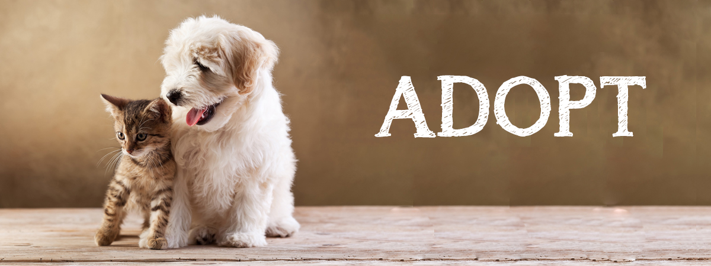

Here are ten reasons to adopt your new best friend.

Because you'll save a life.
Each year, 2.7 million adoptable dogs and cats are euthanized in the United States, simply because too many pets come into shelters and too few people consider adoption when looking for a pet.
The number of euthanized animals could be reduced dramatically if more people adopted pets instead of buying them. When you adopt, you save a loving animal by making them part of your family and open up shelter space for another animal who might desperately need it.
Because you'll get a great animal.
Animal shelters and rescue groups are brimming with happy, healthy pets just waiting for someone to take them home. Most shelter pets wound up there because of a human problem like a move or a divorce, not because the animals did anything wrong. Many are already house-trained and used to living with families.
Because it’ll cost you less.
Usually when you adopt a pet, the cost of spay/neuter, first vaccinations (and sometimes even microchipping!) is included in the adoption price, which can save you some of the up front costs of adding a new member to your family. Depending on the animal, you may also save on housebreaking and training expenses.
Because of the bragging rights.
No one needs to see another selfie—unless it’s a selfie of you with the adorable pet you just adopted! Adopt a pet, post those pictures and let the well-earned likes roll in.
Because it's one way to fight puppy mills.
If you buy a dog from a pet store,online seller or flea market, you’re almost certainly getting a dog from a puppy mill.
Puppy mills are factory-style breeding facilities that put profit above the welfare of dogs. Animals from puppy mills are housed in shockingly poor conditions with improper medical care, and are often very sick and behaviorally troubled as a result. The moms of these puppies are kept in cages to be bred over and over for years, without human companionship and with little hope of ever joining a family. And after they're no longer profitable, breeding dogs are simply discarded—either killed, abandoned or sold at auction.
These puppy mills continue to stay in business through deceptive tactics — their customers are unsuspecting consumers who shop in pet stores, over the Internet or through classified ads. Puppy mills will continue to operate until people stop supporting them. By adopting a pet, you can be certain you aren't giving them a dime.
Because your home will thank you.
Many of the pets from shelters and rescues are already house-trained, which means you’re not only saving a pet’s life, you may be saving your rug. Adopting a mature pet not only gives older animals a second chance, it often means introducing them to your family will be much easier.
Because all pets are good for your health, but adoptees offer an extra boost.
Not only do animals give you unconditional love, but they have been shown to be psychologically, emotionally and physically beneficial to their companions. Caring for a pet can provide a sense of purpose and fulfillment and lessen feelings of loneliness. And when you adopt, you can also feel proud about helping an animal in need!
Because adoption helps more than just one animal.
Overburdened shelters take in millions of stray, abused and lost animals every year, and by adopting an animal, you’re making room for others. Not only are you giving more animals a second chance, but the cost of your adoption goes directly towards helping those shelters better care for the animals they take in!
Because The Shelter Pet Project makes it easy.
You can go to the Shelter Pet Project to find pets near you, of every size, color, temperament and breed. Purebred and mixed breed animals alike are waiting for their forever homes!
Because you'll change a homeless animal's whole world.
And get a new best friend out of the deal. Seriously, what could be better than that?